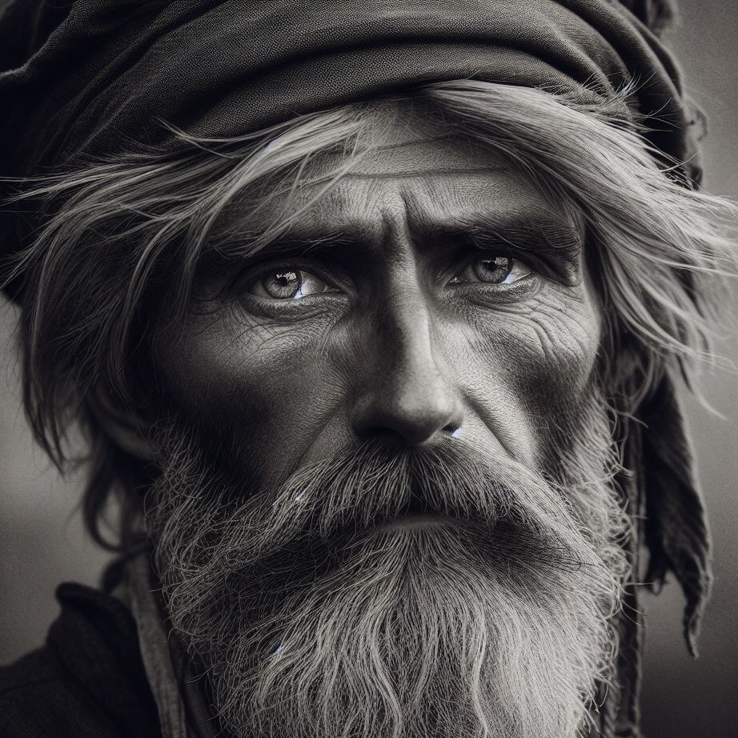

Никанор Анисимович Федосов

Родился 6 августа 1869 г. в д. Абакумовские (Гагинские) Выселки Пронского уезда Рязанской губернии. Фамилия Федосов* досталась Никанору от его прадеда, Федосея Прокофьевича Кокина (1760–1811), который родился под Рязанью, в сельце Качёво, но позже был продан на аукционе помещику Гагину в село Абакумово. А годами позже, незадолго до рождения Никанора, его семью отселили в новую деревню, которую в честь её владельцев прозвали Гагинскими Выселками (ныне д. Гагино). К моменту рождения Никанора в деревне проживало около 350 человек.
Во владении вышеупомянутого помещика долгое время находились и родители Никанора – крепостные крестьяне Анисим Иванович и Евдокия Аввакумовна. Хотя к моменту рождения Никанора крепостное право в России уже было отменено, его семья, как и почти все жители той деревни, продолжала относиться к временнообязанным крестьянам. Не ранее 1884 г. Федосовым удалось выкупить землю и обрести независимость от помещика.
Помимо Никанора, в семье были и другие дети. Это его старшие единокровные сёстры Ксения и Матрёна, родной младший брат Пётр, а также многочисленная родня, жившая в том же доме.
Примерно в 1887 г. Никанору подыскали молодую невесту Прасковью Дьячкову, которая жила в одном из соседних дворов. Она же и стала матерью всех известных на сегодня детей Никанора Анисимовича: Александра (1888–1952), Ивана (1891–1892), Сергея (1895–1940), Марии (1897–1899), ещё одной Марии (1899), Василия (1901) и Михаила (1903–1942).
Вероятно, в 1890-х гг. Никанор Анисимович был призван на обязательную военную службу, которая длилась около шести лет, а затем ещё девять лет числился в запасе как отставной солдат. В то же время в Первой мировой войне Никанор Анисимович едва ли уже мог участвовать по возрасту.
Всё это время семья Никанора Анисимовича продолжала трудиться на довольно плодородной рязанской земле, выращивая хлеб.
С приходом к власти большевиков и началом Гражданской войны на Рязанщине стало расти напряжение. Стремясь обеспечить городских рабочих дешёвым хлебом, новая власть принялась отбирать «излишки» зерна у местных крестьян. Это вызвало волну восстаний, которая прокатилась по всей губернии, включая и Пронский уезд, где жили Федосовы.
К началу 1930-х гг. жизнь на селе стала уже настолько тяжёлой, что сыновья Никанора Анисимовича, как минимум Александр, Сергей и Михаил, решили податься в Москву. Трудно сказать, был ли ещё жив к тому времени их пожилой отец. Ещё до начала войны, в 1940 г., умер Сергей Никанорович, а младший сын, Михаил Никанорович, в начале 1942 г. был призван на фронт и через считанные недели пропал без вести. Что же касается Александра Никаноровича, к началу войны он был уже немолод, и в военных действиях не участвовал. До конца жизни он оставался в Москве.
* Фактически речь идёт не о фамилии, а о так называемом дéдичестве – имени деда. Зачастую крепостные крестьяне, к которым относился и Никанор Анисимович, своих фамилий либо не знали, либо не имели вовсе, поэтому фамилии им присваивали либо по имени отцов и дедов, либо в виде прозвищ. Лишь некоторые крестьяне, в основном те, что происходили из сословия однодворцев или казаков и имели личную свободу, хорошо знали и использовали свои фамилии. Древняя же фамилия Федосовых – Кокины. Со временем она была утрачена.